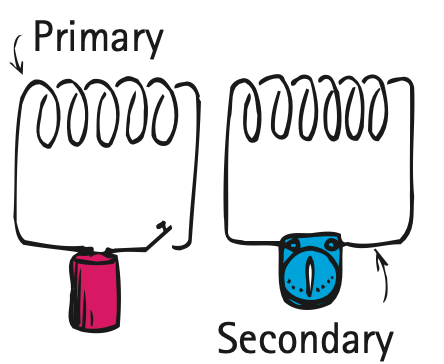
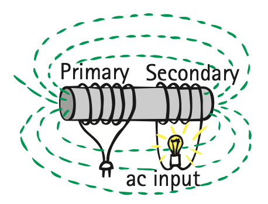
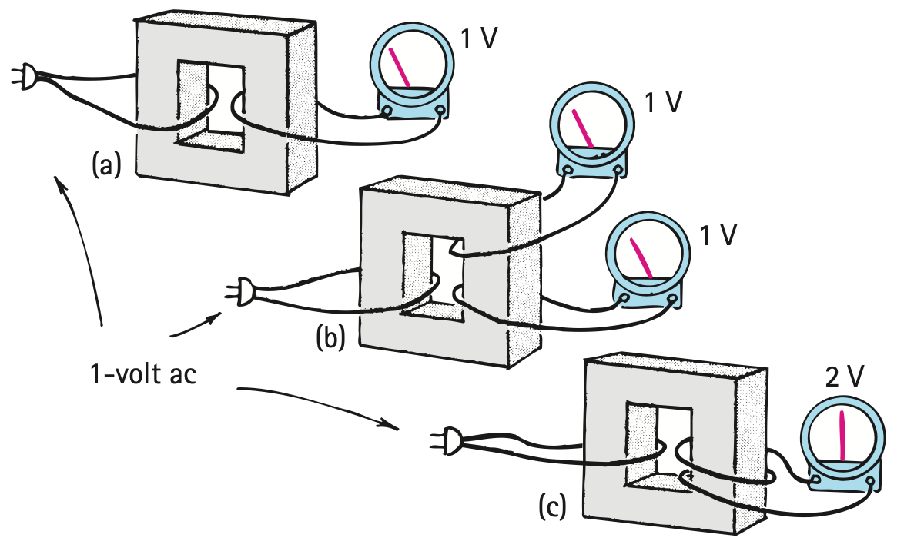

Transformers
Electric energy can certainly be carried along wires, and now we’ll see how it can be carried across empty space. Energy can be transferred from one device to another with the simple arrangement shown in Figure 25.11. Note that one coil is connected to a battery and the other is connected to a galvanometer. It is customary to refer to the coil connected to the power source as the primary (input) and to the other as the secondary (output). As soon as the switch is closed in the primary and current passes through its coil, a current occurs in the secondary also—even though there is no material connection between the two coils. Only a brief surge of current occurs in the secondary, however. Then, when the primary switch is opened, a surge of current again registers in the secondary, but in the opposite direction.

This is the explanation: A magnetic field builds up around the primary when the current begins to flow through the coil. This means that the magnetic field is growing (that is, changing) about the primary. But, since the coils are near each other, this changing field extends into the secondary coil, thereby inducing a voltage in the secondary. This induced voltage is only temporary because when the current and the magnetic field of the primary reach a steady state—that is, when the magnetic field is no longer changing—no further voltage is induced in the secondary. But, when the switch is turned off, the current in the primary drops to zero. The magnetic field about the coil collapses, thereby inducing a voltage in the secondary coil, which senses the change. We see that voltage is induced whenever a magnetic field is changing through the coil, regardless of the reason.
If you place an iron core inside the primary and secondary coils of the arrangement of Figure 25.11, the magnetic field within the primary is intensified by the alignment of magnetic domains. The field is also concentrated in the core and extends into the secondary, which intercepts more of the field change. The galvanometer will show greater surges of current when the switch of the primary is opened or closed. Instead of opening and closing a switch to produce the change of magnetic field, suppose that alternating current is used to power the primary. Then the frequency of periodic changes in the magnetic field is equal to the frequency of the alternating current. Now we have a transformer (Figure 25.12). A more efficient arrangement is shown in Figure 25.13.


If the primary and secondary have equal numbers of wire loops (usually called turns), then the input and output alternating voltages will be equal. But if the secondary coil has more turns than the primary, the alternating voltage produced in the secondary coil will be greater than that produced in the primary. In this case, the voltage is said to be stepped up. If the secondary has twice as many turns as the primary, the voltage in the secondary will be double that of the primary.
We can see this with the arrangements in Figure 25.14. First consider the simple case of a single primary loop connected to a 1-volt alternating source, and a single secondary loop connected to the ac voltmeter (a). The secondary intercepts the changing magnetic field of the primary, and a voltage of 1 V is induced in the secondary. If another loop is wrapped around the core so that the transformer has two secondaries (b), it intercepts the same magnetic field change. We see that 1 V is induced in it also. There is no need to keep both secondaries separate. We could join them (c) and still have a total induced voltage of 1 V + 1 V, or 2 V. This is equivalent to saying that a voltage of 2 V will be induced in a single secondary that has twice the number of loops as the primary. If the secondary is wound with three times as many loops, then three times as much voltage will be induced. Stepped-up voltage may light a neon sign or send power over a long distance.

If the secondary has fewer turns than the primary, the alternating voltage produced in the secondary will be lower than that produced in the primary. The voltage is said to be stepped down. This stepped-down voltage may safely operate a toy electric train. If the secondary has half as many turns as the primary, then only half as much voltage is induced in the secondary. So electric energy can be fed into the primary at a given alternating voltage and taken from the secondary at a higher or lower alternating voltage, depending on the relative number of turns in the primary and secondary coil windings. The relationship between primary and secondary voltages with respect to the relative number of turns is given by
Primary voltage / Number of primary turns = secondary voltage / number of secondary turns
It might seem that we get something for nothing with a transformer that steps up the voltage. Not so, for energy conservation always regulates what can happen. When voltage is stepped up, the current in the secondary is lower than in the primary. The transformer actually transfers energy from one coil to the other. Make no mistake about this point: A transformer can in no way step up energy—a conservation of energy no-no. A transformer steps voltage up or down without a change in energy. The rate at which energy is transferred is called power. The power used in the secondary is supplied by the primary. The primary gives no more than the secondary uses, in accord with the law of conservation of energy. If we ignore the slight power losses due to heating of the coils and the core, then
Power into primary = power out of secondary
Electric power is equal to the product of voltage and current, so we can say
(Voltage × current)primary = (voltage × current)secondary
We see that if the secondary has more voltage than the primary, it will have less current than the primary. The ease with which voltages can be stepped up or down with a transformer is the principal reason that most electric power is ac rather than dc.